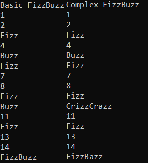

Code-Based User Interface Tweening

This was created to explore the possibility of moving user interface animations out of
the animation tab and into code instead; with the claim that using the Animator for User
Interface's are costly in terms of performance due to the fact that they apparently update
every frame. Currently only tweens between positions but this could easily be
extrapolated to work with any kind of values.
This was done using what's called Second Order Systems
I found it when someone used it to control the damping, response and frequency to Procedural Animations.
But I adapted the method into being used for User Interface animations, I also added extra components
into the script
which allowed for animations to be triggered from buttons, for animations to trigger other animations
upon finishing.
This meant that animations could be tied together, one could finish and then cause another animation to
play.
3D Platforming Project
This was created to experiment and try to emulate the mechanics and small concepts of a 3D Platformer that usually go underlooked when playing such as how a character might stick to the ground when running up and around slopes, player input relative to the camera, dynamic jump height based on how long the button is held down. My aim was to create an incredibly flexible and tight 3D Platformer script.
Flexible Fizzbuzz (C++)
 This was an experiment based on the classic FizzBuzz programming question given in interviews, due to it's simple premise
but precise question of having something happen when A, something different when B happens and something completely different when A AND B happen; it's
also a good question to test someone's ability to think ahead because the simplest solution at first mind hinder the solution when the problem becomes more complex.
If you don't know, FizzBuzz is a game where players one at a time increment by one every turn; if it's divisible by 3, they say Fizz and when it's divisible
by 5, they say Buzz and if it's divisible by both, they say FizzBuzz!
The initial simplicity of FizzBuzz comes from the fact that the third option of A and B is the same conclusion as if A and B both happened.
But say it wasn't, say if it was divisible by both 3 and 5; it was something else said instead like "BazzBuzz". Then the solution of just
adding the results of A and B wouldn't be possible. And that's what spurred my interest into making a more Flexible FizzBuzz.
This is done by a vector/list of Pairs of functions and list of strings.
- The functions take in an int and return a string. So say, Fizz will be a function that takes in a number 'n' and check if it's
a multiple of 3 and return Fizz if it is and return an empty string if not.
- The vector/list of strings are from other functions that can be overriden with the new string from this pair's function.
so say we had a function that returned FizzBazz on multiples of 3 and 5; we'd need to override Fizz and Buzz, so we put those
words into the vector.